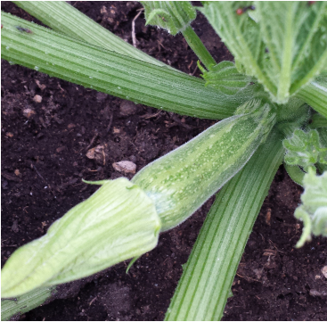

li
Produzione 2017
Zucchine

Coltivare in terreno ricco di materia organica e non coltivare dopo solanacee o piante della stessa famiglia delle cucurbitacee
- Varietà:Zucchina chiara di faenza
- Periodo di semina:Marzo / Aprile
- Primo raccolto :Fine Aprile
- Ultimo raccolto:Fine Luglio
- Raccolto
| Dimensione |
Quantità |
| Piccole (10cm) |
16 |
| Medie (16cm) |
26 |
| Grandi (>16cm) |
9 |
|
51 |
-->Acquista Semi<--
Piselli

American Wonder: varietà media precoce come ciclo colturale
Consigli
- Piantare in semenzaio riscaldato.
è importante:
- acquistare vasetti biodegradabili (di cocco o cartone )
- Mantenere areato il semenzaio per evitare muffe
- Non usare il coperchio del semenzaio
- non usare mettere il termosifone vicino al termosifone
- Fissare i sostegni nel terreno non appena le piantine raggiungono i 10cm
- Acquistare una rete con spazi non più di 10 cm per garantire sostegni adeguati
-->Acquista Semi<--